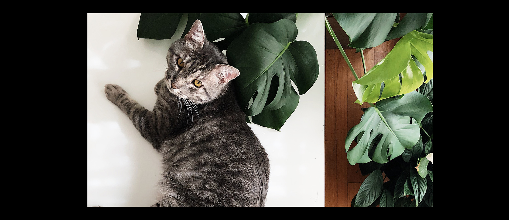

Priority Plant
To help you plan your next plant purchase according to your own personal preferences
Pet Friendly
-- Pet Safe Plants -- »
Low Light
-- Low Light Friendly Plants -- »
Low Maintenance
-- Minimal Maintenance Plants -- »

Previous
Next
What matters most to you?
Which of these is your top plant priority?
Pet Safe
Low Light
Low Maintenance
Aesthetic
Cost
It Depends
Resources and References
Additional Resources :
R1 »
R2 »
R3 »
Carousel Images: :
Cat with Plants »
Succulents »
Low Lighting Plant »